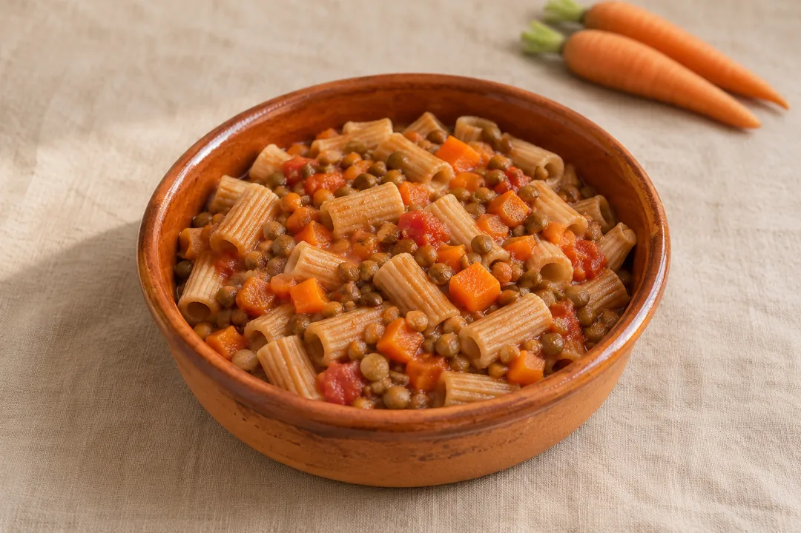
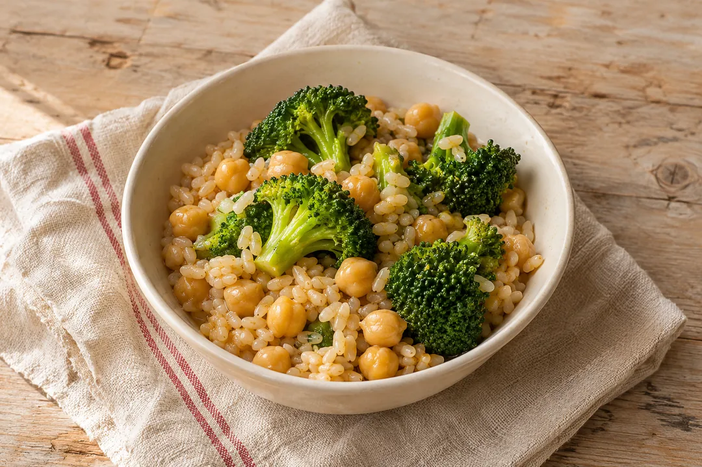
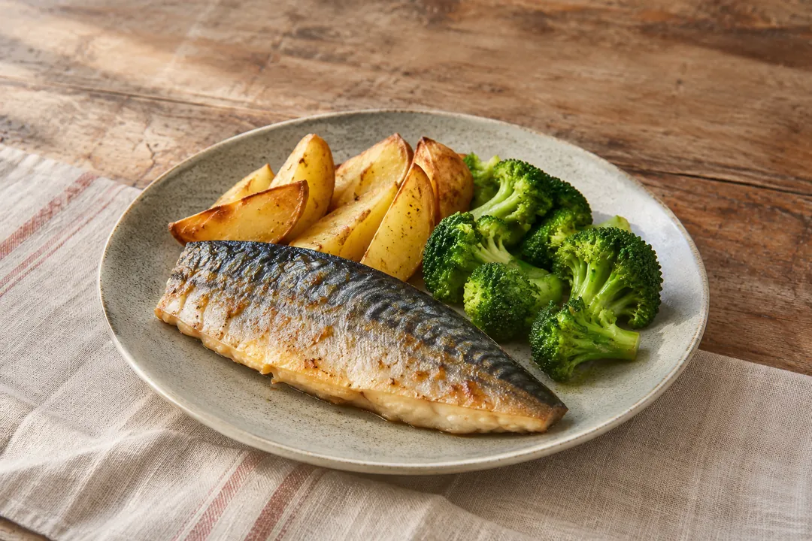
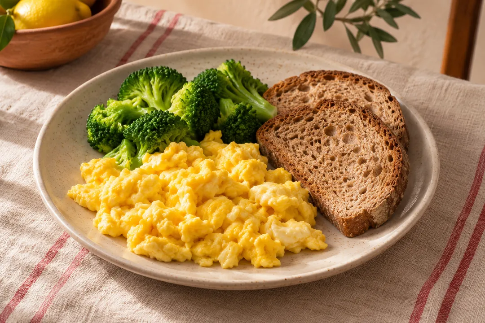
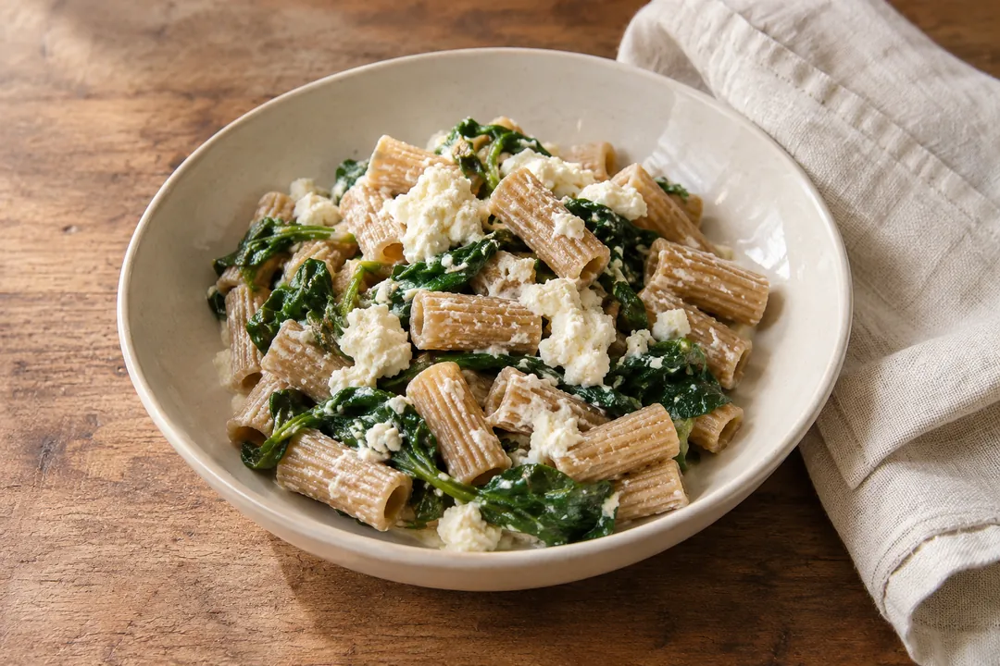
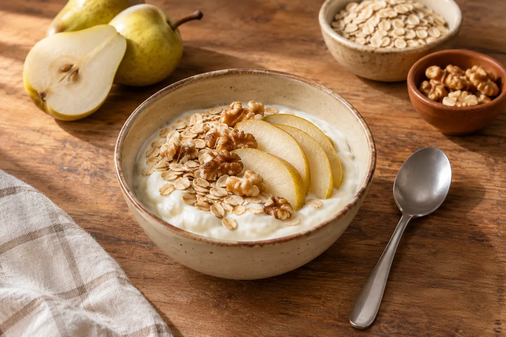

Ricette mediterranee
28 ricette da mettere in rotazione. Scegli tra 24 pranzi e cene con verdure, cereali o patate e una fonte di proteine. Completa la settimana con 4 idee per colazione.
Componi la settimana e fai la lista della spesa
Nel menu puoi partire da due esempi pronti o scegliere ogni pasto. La lista somma gli ingredienti in base alle porzioni e a quello che hai già in casa.
Scegli una ricetta
Le raccolte sono illustrate con un piatto di esempio. Ogni ricetta ha dosi, preparazione e stime per porzione tratte dalle tabelle CREA.

Minestre di legumi e cereali
Apri 3 ricette



Piatti unici con ricotta
Apri 2 ricette
Altre sette ricette dell’archivio
- Pasta integrale con crema di ceci, cavolfiore e rosmarino · 436 kcal e 57 g per porzione (legumi).
- Riso integrale con pollo, radicchio e noci · 547 kcal e 57 g per porzione (carne bianca).
- Merluzzo al forno con patate, finocchio e limone · 422 kcal e 47 g per porzione (pesce).
- Zuppa di orzo, lenticchie, porro e carota · 362 kcal e 49 g per porzione (legumi).
- Frittata di zucca e spinaci con pane integrale · 490 kcal e 45 g per porzione (uova).
- Borlotti e riso integrale con pomodori · 287 kcal e 36,1 g per porzione (legumi).
- Zuppa di lenticchie, patate e carote · 298 kcal e 40 g per porzione (legumi).
Varietà e spesa sostenibile
Fai spazio a legumi, cereali integrali e ortaggi di stagione. Puoi scegliere più piatti con le stesse verdure o usare una parte dei legumi in una seconda ricetta. Per valutare prezzi e quantità utilizzabili, consulta la guida al costo di una ricetta.
Indicazioni sul modello alimentare e la sostenibilità. CREA · Linee guida per una sana alimentazione
Capire i carboidrati e le porzioni
Nei pesi trovi indicato se l’alimento va pesato a crudo, a secco o da cotto. Controlla l’etichetta dei prodotti che usi e considera anche ciò che aggiungi al piatto.
Ingredienti, dosi e valori per porzione
Le ricette riportano i carboidrati disponibili in grammi e le calorie per porzione. Le stime dipendono dalle dosi e dagli ingredienti indicati.
Se segui un piano per il diabete o la salute del cuore, usa le porzioni concordate con chi ti segue. Dieta, diabete e cuore
Aggiornato il .